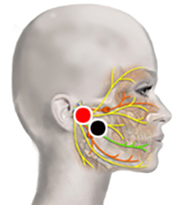

Parálisis Facial
Par
nervio facial (D/I) - nervio facial (homolateral)

Rastrear el nervio para encontrar la mejor ubicación de los imanes.
Generalidades:
El nervio facial es el séptimo par craneal, cada uno a los costados de la cara. Es un nervio mixto (motor y sensitivo), tiene varias funciones entre ellas controlar los músculos del rostro, sensibilidad del rostro y la lengua, suple inervación preganglionar parasimpática (control de las glándulas salivares, lagrimales y paranasales) y a varios ganglios nerviosos de la cabeza y el cuello. Se debe tener en cuenta que la parálisis también se puede deber a un daño cerebral (accidente cerebrovascular).